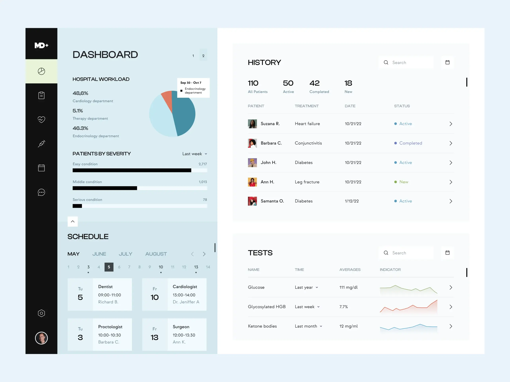

About Me
I am Kayang sandy, a computer scientist and a 400 level student at veritas university abuja.I'm passionate about creating efficient and functional websites using HTML and tailwind CSS.I enjoy playing football and table tennis, playing games and watching movies in spare time and i am also intrested in hiking, travelling.
Projects
FACE DETECTION
One popular computer science project is building a face detection system. This involves training a machine learning algorithm to recognize faces in images. Once the algorithm is trained, it can then be used to detect faces in new images. This can be used for a variety of applications, such as security systems and social media apps.
HOSPITAL MANAGEMENT SYSTEM
Type: Application development, Database management, Programming
Weather Forecasting APP
Type: Application development, Web development, Programming

Contact Me
08154930111, 08082708862
Sandykayang@gmail.com
Snapchat: @sandy_kayang21
abuja nasarawa state